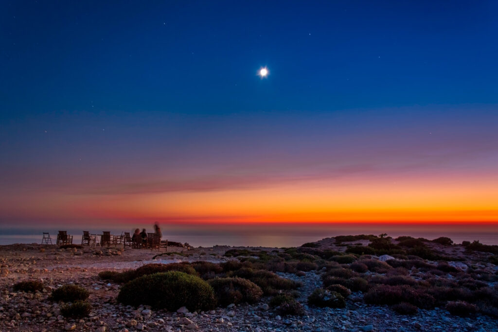

In ancient times iron was exported from Lavraka harbour, which today is to be found 3 meters under sea level. In the region of Agios Ioannis, just southeast of Lavraka you can see the ruins of the city built during the First Byzantine Period. In those days, the City of Agios Ioannis had 8,000 inhabitants and Gavdos had its own archbishop. Today you can see the famous chapel erected from 900 A.D.
You will find the Folklore Museum in the village of Vatsiana and in the village of Ampelo you will have the opportunity to walk among the vineyards of Minoa. In Kastri, the capital of Gavdos, you can walk along picturesque alleys with stone houses and gardens.
Near the village of Ambelos you will find the charming lighthouse of Gavdos. The original lighthouse was built back in the late 19th century by the French Company of Ottoman Lighthouses. It was one of the most visible lighthouses worldwide, second only to the one in the Land of Fire in Argentina. With a tower height of 14 meters its focal height was 360 meters.
The tombs found in Lavraka Bay on the northwestern side of Gavdos are dating back to the Minoan times.